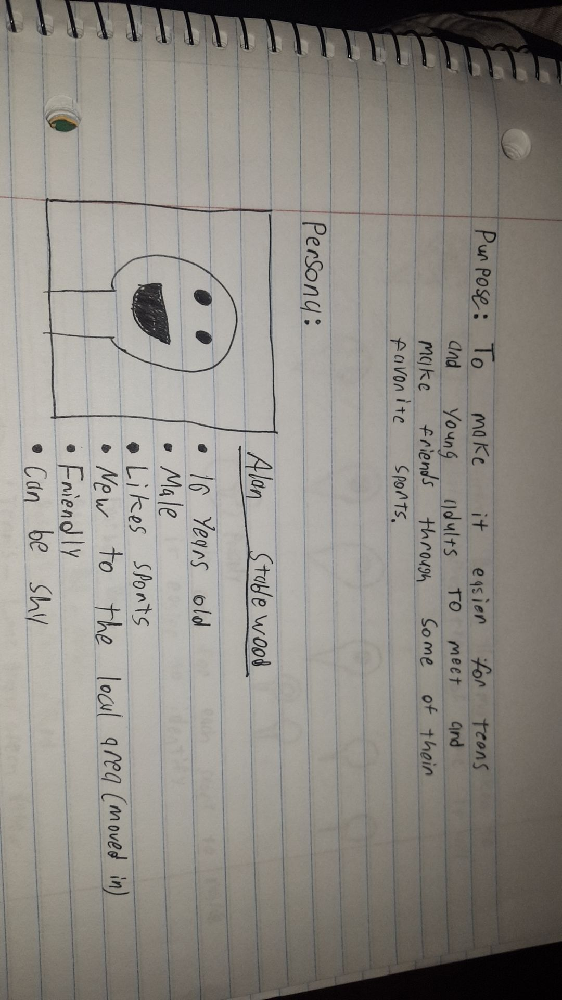

The Plan
So my idea took form of the app concept, "Pick'em Ups". Pick'em Ups is a social app that, in short, allows its users to create or find local pick-up games with other users, but I'll go into more detail as we go on. To start off I wanted to create a easy to navigate home page so it wasn't confusing to younger users.
- So for starters I made sure to only have 4 or less tabs so there wasn't an overload of information making it confusing.
- I also wanted the most important information, (What games are happnening around you) to be one of the first things you see when you open the app. I based these decisions off of my persona that I had created called "Alan".
- 
- Earliest Sketches
 The image above contains my earliest sketches that show how I wanted the home and map pages to resemble(most important pages)
The friends and profile tab are more for privacy reasons that I'll talk about in the design issues. Later the sign up box in the home page will be moved to the greeting page that gets added. The markers will be color coded for easy identification and can be clicked on to expand and display information regaurding to the game.
The image above contains my earliest sketches that show how I wanted the home and map pages to resemble(most important pages)
The friends and profile tab are more for privacy reasons that I'll talk about in the design issues. Later the sign up box in the home page will be moved to the greeting page that gets added. The markers will be color coded for easy identification and can be clicked on to expand and display information regaurding to the game. -

This is a picture of my sketches of the marker that would display for userswhen A game has been created. I wanted them to be simple, but informative so they are color coded for the game they represent as well as contain a ball that the game is normally played with for aesthetic quality.
- Below this image I have several other images that are more updated versions of the pages I first drew above.
- Yes, they are sideways and I apologize about that, but you can get a better picture of them when the window is at about half the size.